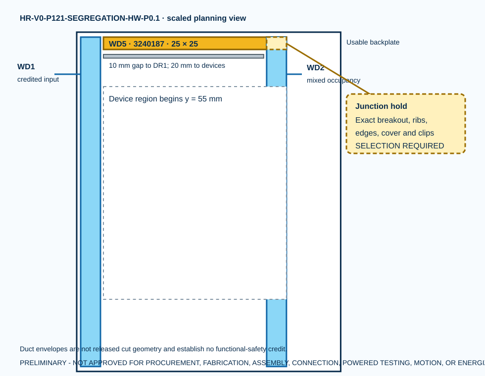

Phoenix Contact CD 25X25 exact candidate
WD5 planning length
logical allocation; physical wire unselected
zero safety credit or work authority
The separate 25 × 25 mm duct body and cover replace the undocumented idea of an internal divider. The WD5/WD2 junction, conductor outside diameter, fill, thermal conditions, bend and separation are still SELECTION REQUIRED.

Seven logical conductors
| ID | Endpoints | Net | Fill disposition |
|---|---|---|---|
| C-01 | XD24:02 to SR1:A1 | SAFETY_24V | NOT CALCULATED; Phoenix catalog example is not a project release |
| C-02 | XD24:06 to KWD1:A1 | SAFETY_24V | NOT CALCULATED; Phoenix catalog example is not a project release |
| C-03 | XD24:07 to KWD1:11 | SAFETY_24V | NOT CALCULATED; Phoenix catalog example is not a project release |
| C-04 | XD24:09 to KWD2:A1 | SAFETY_24V | NOT CALCULATED; Phoenix catalog example is not a project release |
| C-05 | XD24:10 to KWD2:21 | SAFETY_24V | NOT CALCULATED; Phoenix catalog example is not a project release |
| C-06 | KWD1:14 to KWD2:11 | WD_SRA1_SUPPLY_INTERMEDIATE | NOT CALCULATED; Phoenix catalog example is not a project release |
| C-07 | KWD2:14 to SRA1:A1 | SRA1_A1_WD_GATED | NOT CALCULATED; Phoenix catalog example is not a project release |
What is actually resolved
Phoenix Contact item 3240187 is an exact purchasable catalog candidate with a 25 × 25 × 2000 mm envelope. One 369.8 mm WD5 planning piece fits the declared panel envelope with 10 mm to DR1 and 20 mm to the device region. Existing item 3240189 stock cannot supply it because only 20.8 mm remains before kerf.
What remains unresolved
No numeric safety separation is claimed. WD2 is mixed-occupancy, the T-junction is not released, the manufacturer’s ten-cable example is not a project fill calculation, and no conductor, fastener, label, cutout, physical inspection or qualified acceptance exists.